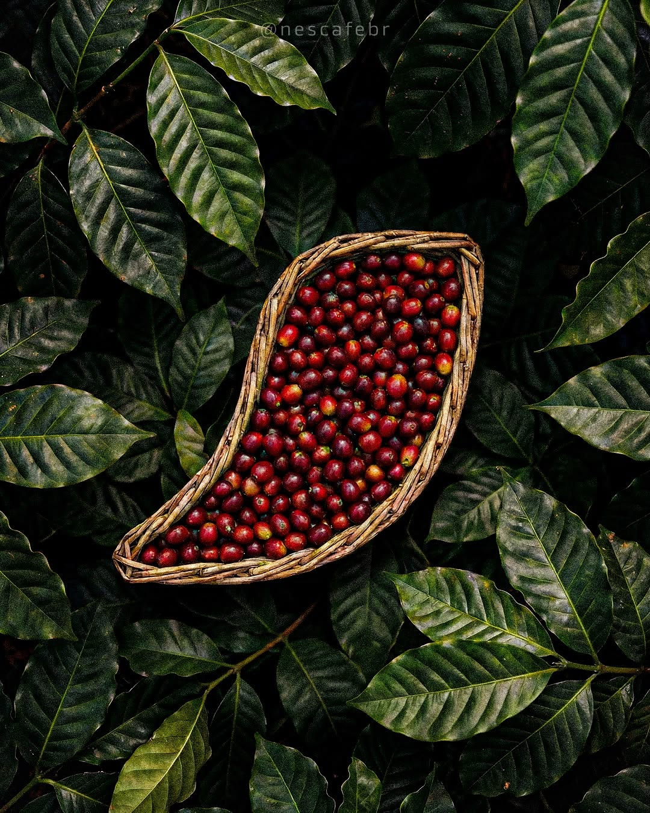
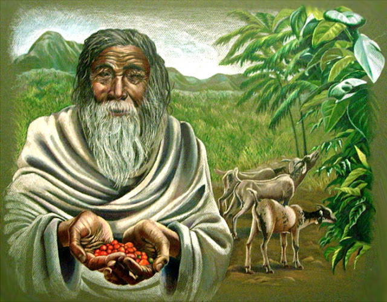
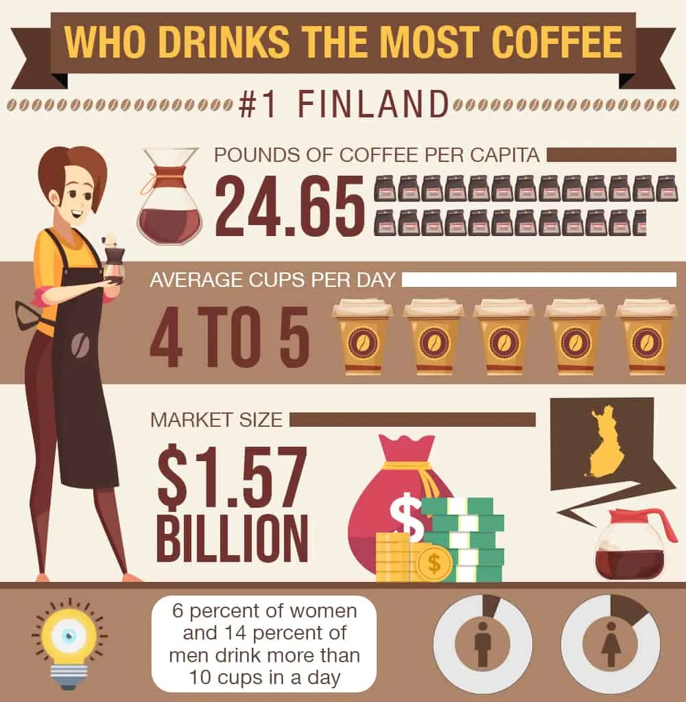

Discover fascinating stories, facts, and traditions from the world of coffee.

Coffee beans are actually seeds foundinside coffee cherries.
Legend says a goat herder named Kaldi noticed his goats became energetic after eating coffee cherries.


On average, a Finnish person drinks about roughly 3-5 cups per day per person. Coffee is deeply embedded in daily life there—people drink it at home, at work breaks (called kahvitauko), and during social gatherings.